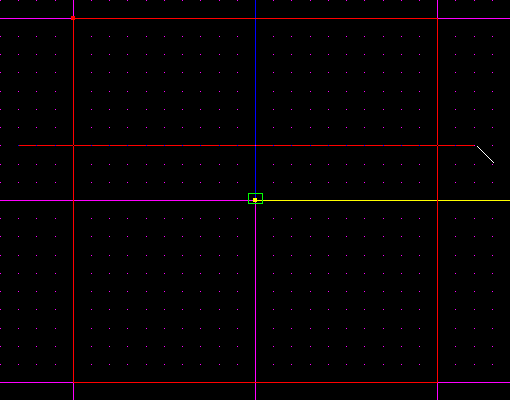
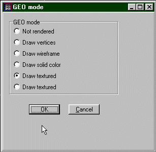
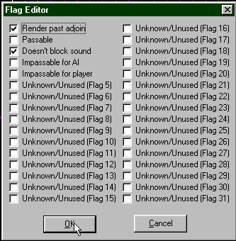
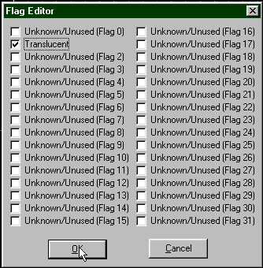
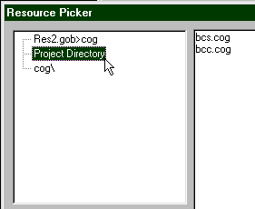
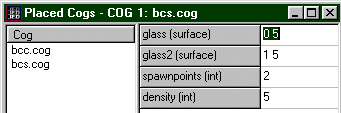
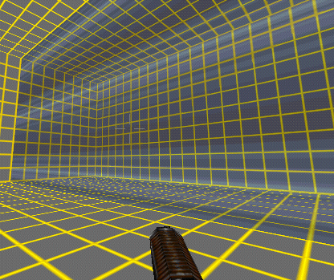
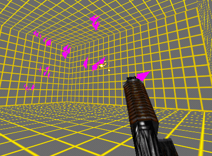

By: PC_McCloud
Also Refrence Breaking Glass By : Executor
This is a how to make Regenrating Glass and Basic Client/Server .cog Tutorial
Things Needed :

In Jedi Knight :
In MotS :
There are many mats that make Good Subs for the Glass mats tha give it a little diffrent look So experment with the mats..
Now you need to Change some on the Serface Properties
| ( +GEO ) settings | ( +ADJOIN FLAGS) settings | ( +FACE FLAGS ) settings |
|  |  |  |
| Click to inlarge | Click to inlarge | Click to inlarge |


For me my Serfaces were "0 5" and "1 5" See how I placed the Serface information in to the "bcs.cog". There is No information to imput in to the Client Cog "bcc.cog" for it to work properly you MUST have it. One Client Cog can Handle the Operation of more then one Server Cog, So if you wish to add more then glass serface all you to add in another Server Cog. The Client Cog will work for all the Glass serfaces in your level.
Now that you have compleated all the Steps above Save and Test your level if you compleated them Properly you will have Glass the Brakes when you Shoot it and Respawns after 60 Seconds
|  |
|  |
Good Luck and Happy Glass Shooting :-)
By PC_McCloud
{kind=link}
{kind=link}
{kind=link}